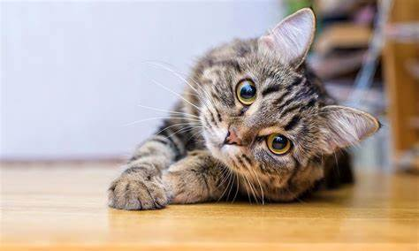
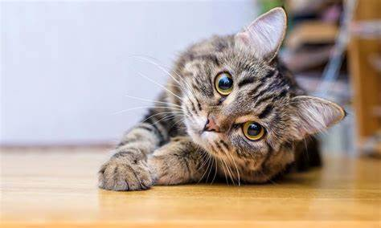
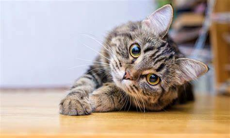

Los gatos son una de las mascotas que más aceptación tienen entre las personas, junto con los perros. Estos felinos tienen una forma de ser muy diferente de la de estos caninos, algo que les hace ser muy especiales, tanto por su actitud, como también por sus características
